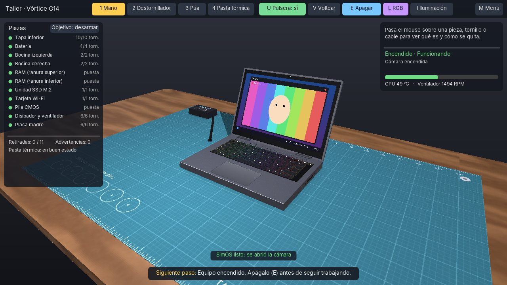

Manual técnico
Taller de computadoras en 3D · Processing 4 (Java, P3D / OpenGL)

Versión 2.0 · noviembre de 2026 · 5654 líneas de código Processing en 13 pestañas + 2 shaders GLSL
DesarmadoPC es un simulador educativo en el que el usuario desarma y arma computadoras en un taller 3D. Hay 8 equipos de diseño propio (4 laptops y 4 PCs de escritorio) con 11 a 13 piezas cada uno. Cada pieza tiene tornillos, cables y dependencias reales: por ejemplo, la tarjeta gráfica no sale hasta desconectar su cable de energía y quitar sus 2 tornillos. Al encender el equipo se simula el POST del BIOS, la carga del sistema y la temperatura del procesador. Si todo está bien, la pantalla muestra la cámara web del usuario.
El proyecto integra en una misma ventana:
| Herramienta | Uso en el proyecto |
|---|---|
| Processing 4 (modo Java) | Lenguaje, editor y biblioteca gráfica principal. Renderizador P3D, que trabaja sobre OpenGL (JOGL). |
| processing.core | Dibujo 2D/3D, transformaciones, luces, texturas (PImage, PGraphics), PVector, PMatrix3D. |
| processing.opengl | PShader (shaders GLSL propios) y PGL (acceso a OpenGL para el búfer de esténcil). |
| GLSL (OpenGL Shading Language) | Shaders rtx.vert y rtx.frag. Están escritos en estilo GLSL 1.20; Processing los convierte a GLSL 1.50 en perfiles modernos. |
| Video Library for Processing 4 | Clase Capture para mostrar la cámara web dentro de la pantalla simulada. |
| Java Sound (javax.sound.sampled) | Reproducción de los efectos de sonido WAV sin librerías externas. |
| Java SE 17 (incluido con Processing) | Colecciones (ArrayList, HashMap), clases internas, manejo de excepciones. |
| processing-java | Exportación del ejecutable desde la línea de comandos (scripts en 02_Ejecutable). |
Processing une todas las pestañas .pde de la carpeta del sketch en una sola clase que hereda de PApplet. Por eso los .pde tienen que estar en la raíz del sketch, y los recursos van en data/. El código está dividido por responsabilidad: lógica (estado y reglas, sin dibujar), vista (cámara, orden de la escena e interfaz) y render 3D (modelos, texturas y luces).
Entrega_DesarmadoPC/ ├── 01_Codigo_Fuente/ │ └── DesarmadoPC/ ← sketch de Processing │ ├── DesarmadoPC.pde ← pestaña principal (setup / draw) │ ├── Camara3D.pde Catalogo.pde Equipo.pde Escena.pde │ ├── Iluminacion.pde Interfaz.pde Luces.pde Modelos.pde │ ├── Pantalla.pde Pieza.pde Rtx.pde Texturas.pde │ ├── LEEME.txt │ └── data/ │ ├── shaders/ rtx.vert · rtx.frag │ └── sonidos/ alarma, atornillar, clic, desatornillar, error, │ inicio, pitido, poner, quitar (.wav) ├── 02_Ejecutable/ ← scripts de exportación e instrucciones ├── 03_Documentacion/ ← Manual de usuario y Manual técnico (PDF) └── 04_QR/ ← QR_DesarmadoPC.png
| Archivo | Líneas | Responsabilidad |
|---|---|---|
DesarmadoPC.pde | 465 | Programa principal: setup(), draw(), menú, eventos de mouse y teclado, cámara web y sonido |
Camara3D.pde | 86 | Cámara en órbita con suavizado y rayo del mouse |
Catalogo.pde | 755 | Clase Modelo y los 8 modelos; construcción de cada equipo (piezas, tornillos, cables, dependencias) |
Equipo.pde | 512 | Reglas: qué se puede quitar o poner, herramientas, volteo de la laptop, selección por rayo |
Pieza.pde | 191 | Clases Tornillo, Conector y Pieza |
Escena.pde | 170 | Orden de dibujo de la escena 3D |
Modelos.pde | 893 | Primitivas (caja, cilindro, tubo, aspas) y modelos 3D de piezas, laptops, gabinetes y monitor |
Texturas.pde | 811 | Texturas generadas por código, cajas con textura, sombra de contacto y fondo |
Iluminacion.pde | 247 | Luces de la escena, ambientes y panel de iluminación |
Rtx.pde | 293 | Shader RTX, materiales, luz de LEDs/pantalla y sombras proyectadas con esténcil |
Luces.pde | 320 | LEDs RGB de las laptops y brillo aditivo |
Pantalla.pde | 487 | Pantalla simulada: diagnóstico, POST, carga, SimOS, temperatura y cámara web |
Interfaz.pde | 424 | Capa 2D: barra de herramientas, paneles, avisos, tooltip y ayuda |
Las medidas del modelo están en milímetros: x hacia la derecha, h hacia arriba y z hacia el usuario. Como en Processing el eje Y crece hacia abajo, al dibujar siempre se usa -h (por ejemplo translate(p.x, -p.h, p.z)). La mesa está en h = 0.
Todo ocurre en setup(), que Processing ejecuta una vez antes del primer cuadro:
void setup() {
size(1280, 720, P3D);
smooth(8);
fuente = createFont("SansSerif", 14);
fuenteMono = createFont("Monospaced", 15);
textFont(fuente);
textureWrap(REPEAT);
crearTexturas();
crearCatalogo();
cam = new Camara3D();
ui = new Interfaz();
menuLaptops = new Equipo[LAPTOPS.length];
menuTorres = new Equipo[ESCRITORIOS.length];
for (int i = 0; i < LAPTOPS.length; i++) {
menuLaptops[i] = crearLaptop(LAPTOPS[i]);
menuLaptops[i].enUso = true;
menuLaptops[i].volteo = 1;
menuLaptops[i].demoLuces = true;
}
for (int i = 0; i < ESCRITORIOS.length; i++)
menuTorres[i] = crearEscritorio(ESCRITORIOS[i]);
menuLaptop = menuLaptops[0];
menuTorre = menuTorres[0];
equipo = menuLaptop;
monitor = new Pantalla();
prepararRTX();
}
| Instrucción / código | Sintaxis (API oficial) | Función / propósito en el proyecto |
|---|---|---|
size(1280, 720, P3D); | size(width, height, renderer)width, height: int en píxeles; renderer: P2D, P3D, JAVA2D… | Crea la ventana de 1280×720 y el contexto gráfico OpenGL en modo 3D (P3D). Debe ser la primera línea de setup(); sin P3D no existirían cámara, luces, texturas 3D ni shaders. |
smooth(8); | smooth(level)level: int 2, 4 u 8 (muestras de antialiasing) | Activa el antialiasing de 8 muestras: los bordes de gabinetes, tornillos y cables se ven sin “escalones”. |
fuente = createFont("SansSerif", 14);
fuenteMono = createFont("Monospaced", 15); | createFont(name, size)name: String; size: float. Devuelve PFont | Crea las dos fuentes del programa: SansSerif para la interfaz y Monospaced para el BIOS y la consola de la pantalla simulada. |
textFont(fuente); | textFont(which)which: PFont | Fuente activa para todos los text() de la interfaz 2D. |
textureWrap(REPEAT); | textureWrap(wrap)wrap: CLAMP o REPEAT | Permite coordenadas UV mayores que 1: la madera de la mesa y el grano de los plásticos se repiten sin estirarse. |
crearTexturas(); crearCatalogo(); | Funciones propias (Texturas.pde, Catalogo.pde) | Genera por código todas las texturas (madera, tapete, metales, PCB, etiquetas) y define los 8 modelos. Se hace una sola vez para no recalcular en cada cuadro. |
cam = new Camara3D(); ui = new Interfaz(); monitor = new Pantalla(); | Constructores de clases propias | Crea la cámara en órbita, la capa 2D y la pantalla simulada (que contiene un PGraphics de 640×400 donde se dibuja el POST y el sistema). |
menuLaptops[i] = crearLaptop(LAPTOPS[i]); menuTorres[i] = crearEscritorio(ESCRITORIOS[i]); | Funciones propias (Catalogo.pde) que devuelven Equipo | Construye de antemano los 8 equipos que se muestran girando en el menú. |
prepararRTX(); | Función propia (Rtx.pde) | Carga los shaders RTX y los prueba; si la tarjeta de video no los acepta, desactiva RTX y el programa sigue con la iluminación clásica. |
prepararRTX() carga el shader y dibuja un cuadro de 1×1 con él. Después llama flush() para que OpenGL lo compile en ese momento. Si algo falla, la excepción se atrapa y el programa usa la iluminación clásica: nunca se cierra por la tarjeta de video.
try {
rtxShader = loadShader("shaders/rtx.frag", "shaders/rtx.vert");
...
shader(rtxShader);
beginShape(QUADS); texture(texGrano); normal(0, 0, 1); vertex(0, 0, 0, 0, 0); ... endShape();
flush();
resetShader();
rtxDisponible = true;
}
catch (Exception ex) {
rtxDisponible = false;
rtx = false;
}
| Instrucción / código | Sintaxis (API oficial) | Función / propósito en el proyecto |
|---|---|---|
flush(); | flush() | Obliga a Processing a enviar ya la geometría pendiente a OpenGL, de modo que la compilación del shader ocurre dentro del try y no en medio de draw(). |
draw() se ejecuta unas 60 veces por segundo. Su orden garantiza que el 3D quede debajo y la interfaz 2D encima:
void draw() {
background(18, 19, 24);
fondoEstudio();
if (equipo.encendido)
giroAspas += 0.45;
if (modo == MENU) {
dibujarMenu();
clic = false;
return;
}
equipo.actualizar();
monitor.actualizar();
actualizarLuces(equipo);
actualizarColorPantalla();
cam.aplicar();
guardarVista();
luces();
boolean sobreUI = ui.sobrePanel(mouseX, mouseY);
hover = !arrastrando && !sobreUI && !mostrarAyuda ? equipo.buscar(cam.rayo(mouseX, mouseY)) : null;
dibujarEscena(equipo, hover, true);
dibujarIndicadorLuz();
hint(DISABLE_DEPTH_TEST);
camera();
perspective();
sinLuces();
ui.dibujar();
hint(ENABLE_DEPTH_TEST);
clic = false;
}
| Instrucción / código | Sintaxis (API oficial) | Función / propósito en el proyecto |
|---|---|---|
background(18, 19, 24); | background(v1, v2, v3), valores float 0..255 | Borra el cuadro anterior (color y profundidad). Es lo primero de cada cuadro. |
fondoEstudio(); | Función propia: hint(DISABLE_DEPTH_TEST), camera(), rect() | Pinta un degradado 2D de estudio fotográfico detrás de todo, sin afectar el búfer de profundidad. |
if (modo == MENU) {
dibujarMenu();
clic = false;
return;
} | Estructura de control Java | Máquina de estados de dos modos: MENU (vitrina con cámara automática) y TALLER (escena interactiva). |
equipo.actualizar(); monitor.actualizar(); actualizarLuces(equipo); | Métodos propios | Animación continua: avanza las piezas que viajan a la mesa, el volteo de la laptop, la temperatura del CPU, las fases de arranque y el brillo de los LEDs. |
cam.aplicar(); | Método propio que llama camera() y perspective() | Coloca la cámara 3D del cuadro (ver la tabla de Camara3D.aplicar). |
guardarVista(); | getMatrix() → PMatrix3D | Guarda la matriz de la cámara. Se usa para volver a poner las luces en el mismo lugar después de dibujar algo sin luces (pantallas, LEDs). |
luces(); | Función propia (Iluminacion.pde) | Coloca la luz ambiental, las direccionales, la lámpara, la linterna, la luz de LEDs/pantalla y activa el shader RTX. |
hover = ... equipo.buscar(cam.rayo(mouseX, mouseY)) ...; | mouseX, mouseY: int (variables del sistema) | Selección 3D: convierte la posición del mouse en un rayo y busca qué tornillo, cable o pieza toca. |
dibujarEscena(equipo, hover, true); | Función propia (Escena.pde) | Mesa → sombras → equipo → piezas en la mesa → panel de vidrio (lo transparente al final). |
hint(DISABLE_DEPTH_TEST); camera(); perspective(); sinLuces(); ui.dibujar(); hint(ENABLE_DEPTH_TEST); | hint(which); camera() y perspective() sin parámetros restauran la vista 2D por defecto | Integración 2D + 3D: tras la escena se apaga la prueba de profundidad, se vuelve a la cámara por defecto (1 unidad = 1 píxel) y se dibuja la interfaz encima, sin luces ni shader. |
clic = false; | Asignación | El clic se consume en el mismo cuadro; los botones son “inmediatos” (boton() devuelve true solo ese cuadro). |
dibujarEscena() dibuja primero lo opaco y al final lo transparente, para que la mezcla alfa sea correcta: mesa y tapete → sombras de contacto → sombras proyectadas (RTX) → equipo (cuerpo, piezas, tornillos, conectores, cables) → piezas que viajan o están en la mesa → panel de vidrio.
La pantalla del equipo es un PGraphics de 640×400. Cada cuadro, dibujarImagen() pinta en él la fase actual entre pg.beginDraw() y pg.endDraw(): BIOS, carga, SimOS con la cámara, error de arranque o apagado de emergencia. Luego pantallaTexturizada() la pega como textura sobre la geometría del monitor sin luces ni shader, de modo que siempre se ve nítida.
void aplicar() {
yaw = lerp(yaw, yawM, 0.15);
pitch = lerp(pitch, pitchM, 0.15);
dist = lerp(dist, distM, 0.15);
tx = lerp(tx, txM, 0.12);
th = lerp(th, thM, 0.12);
tz = lerp(tz, tzM, 0.12);
ex = tx + sin(yaw) * cos(pitch) * dist;
ez = tz + cos(yaw) * cos(pitch) * dist;
eh = max(th + sin(pitch) * dist, 15);
camera(ex, -eh, ez, tx, -th, tz, 0, 1, 0);
perspective(fov, width / (float) height, 5, 20000);
}
| Instrucción / código | Sintaxis (API oficial) | Función / propósito en el proyecto |
|---|---|---|
yaw = lerp(yaw, yawM, 0.15); dist = lerp(dist, distM, 0.15); | lerp(start, stop, amt) → float | Suavizado: cada cuadro la cámara recorre el 15 % de lo que le falta para llegar a su meta. Da movimientos continuos y sin saltos. |
ex = tx + sin(yaw) * cos(pitch) * dist; ez = tz + cos(yaw) * cos(pitch) * dist; eh = max(th + sin(pitch) * dist, 15); | sin(angle), cos(angle): angle en radianes; max(a, b) | Coordenadas esféricas → cartesianas: posición del ojo en una órbita alrededor del centro. max() impide que la cámara baje de la mesa. |
camera(ex, -eh, ez, tx, -th, tz, 0, 1, 0); | camera(eyeX, eyeY, eyeZ, centerX, centerY, centerZ, upX, upY, upZ), todos float | Coloca el ojo y el punto al que mira. La altura va negativa porque en Processing el eje Y crece hacia abajo; (0, 1, 0) es el vector “arriba” de Processing. |
perspective(fov, width / (float) height, 5, 20000); | perspective(fovy, aspect, zNear, zFar) | Proyección en perspectiva con el campo de visión de la cámara y planos de recorte de 5 a 20 000 mm. |
PVector f = PVector.sub(cc, e); f.normalize(); PVector r = f.cross(u); | PVector.sub(v1, v2), normalize(), cross(v), dot(v) | rayo(): arma la base de la cámara (frente, arriba, derecha) para convertir el píxel del mouse en una dirección 3D. |
float nx = (mx - width / 2.0) / (height / 2.0) * t; | tan(angle); width, height | Normaliza el píxel a −1..1 y lo escala con tan(fov/2): es la inversa de la proyección en perspectiva. |
Processing llama a estas funciones cuando ocurre un evento, entre un cuadro y otro. Los eventos solo cambian variables de estado; el dibujo siempre ocurre en draw().
| Instrucción / código | Sintaxis (API oficial) | Función / propósito en el proyecto |
|---|---|---|
void mousePressed() {
pressX = mouseX;
pressY = mouseY;
botonPresionado = mouseButton;
mousePresionadoLuz();
} | void mousePressed() (evento); mouseButton: LEFT, RIGHT o CENTER | Guarda dónde empezó la pulsación para distinguir clic de arrastre, y toma el control del panel de luz si se presionó sobre él. |
if (!arrastrando && dist(mouseX, mouseY, pressX, pressY) > 4 ...) arrastrando = true; | void mouseDragged(); dist(x1, y1, x2, y2) | Un movimiento de más de 4 px convierte la pulsación en arrastre. |
float dx = mouseX - pmouseX, dy = mouseY - pmouseY; if (botonPresionado == CENTER || shift) cam.desplazar(dx, dy); else cam.girar(dx, dy); | pmouseX, pmouseY: posición del cuadro anterior | El desplazamiento del mouse entre cuadros gira la órbita, o la desplaza con Shift o el botón central. |
void mouseReleased() {
if (!arrastrando) {
... clic = true;
else if (botonPresionado == LEFT)
equipo.usar(hover); | void mouseReleased() | Si no hubo arrastre fue un clic: sobre la interfaz activa un botón; sobre la escena usa la herramienta actual en lo que está bajo el mouse. |
void mouseWheel(MouseEvent ev) {
cam.zoom(ev.getCount());
} | void mouseWheel(MouseEvent event); event.getCount() → int (+ hacia el usuario) | La rueda acerca o aleja la cámara un 10 % por paso. |
if (key == ESC) { key = 0; ... } | key: char; ESC: constante | Evita que ESC cierre el programa (Processing lo hace por defecto); en su lugar cierra la ayuda. |
if (key == CODED) {
if (keyCode == SHIFT) shift = true; | key == CODED indica tecla especial; keyCode: SHIFT, UP, DOWN… | Registra Shift para el desplazamiento de la cámara. |
char k = Character.toLowerCase(key); if (k >= '1' && k <= '4') herramienta = k - '1'; else if (k == 'x') alternarRTX(); | void keyPressed(); Java Character.toLowerCase(char) | Atajos sin importar mayúsculas: 1–4 herramientas; U, V, E, F, R, H, M, L, I, T, O, K, X (RTX) y N (sonido). |
void captureEvent(Capture c) {
c.read();
camaraLista = true;
} | Librería Video: void captureEvent(Capture c), read() | Evento asíncrono de la cámara web: lee el cuadro nuevo, que se muestra en el escritorio de SimOS. |
return sobre && clic; | Método propio boton(t, x, y, w, h, activo, acento) | Interfaz de modo inmediato: el botón se dibuja y responde en la misma llamada; si el mouse está encima y hubo clic devuelve true. |
Todas las transformaciones se aplican a la matriz actual (modelo-vista) y afectan a lo que se dibuja después. El patrón del proyecto es siempre pushMatrix() → transformaciones → dibujo → popMatrix().
| Instrucción / código | Sintaxis (API oficial) | Función / propósito en el proyecto |
|---|---|---|
pushMatrix(); ... popMatrix(); | pushMatrix() / popMatrix() | Guarda y recupera el sistema de coordenadas. Cada pieza se dibuja con sus propias transformaciones sin afectar a las demás. Las pruebas automáticas verifican que la pila quede en 0 al final de cada cuadro. |
translate(p.x, -p.h, p.z); | translate(x, y, z) | Lleva el origen al centro de la pieza (en mm). La altura h es positiva hacia arriba en el modelo, por eso se niega para el eje Y de Processing. |
translate(0, -13 - elevacion(), 0); rotateZ(-anguloVolteo()); translate(0, 13, 0); | rotateZ(angle), angle en radianes | Equipo.transformar(): voltea la laptop sobre su eje. Mover el pivote, rotar y regresar hace que gire alrededor del borde y no del origen; elevacion() la levanta mientras gira. |
translate(0, -H, -hd); rotateX(e.aperturaTapa()); | rotateX(angle) | Abre la tapa de la laptop alrededor de la bisagra (borde trasero de la base). |
rotateY(gira ? giroAspas : 0.3); ... rotateY(TWO_PI * i / n); | rotateY(angle); TWO_PI = 2π | aspas(): el ventilador entero gira con giroAspas (aumenta 0.45 rad por cuadro con el equipo encendido) y cada aspa se reparte a TWO_PI/n. |
rotateY(atan2(dx, dz)); rotateX(-asin(constrain(dy / l, -1, 1))); | atan2(y, x), asin(value), constrain(amt, low, high) | tubo(): orienta un cilindro de un punto a otro (mangueras y cables): primero el rumbo y luego la inclinación. |
float t = p.anim, k = t * t * (3 - 2 * t); rotateX(HALF_PI * giro); | rotateX(angle); HALF_PI = π/2 | orientarEnMundo(): curva suave (smoothstep) para que la pieza se acueste 90° mientras viaja a la mesa. |
pg.translate(ix + iw, iy); pg.scale(-1, 1); pg.image(camara, 0, 0, iw, ih, ...); | scale(x, y); image(img, a, b, c, d, u1, v1, u2, v2) | Transformación 2D dentro de la pantalla simulada: refleja la imagen de la cámara como un espejo. |
applyMatrix(1, -L[0] / L[1], 0, y0 * L[0] / L[1],
0, 0, 0, y0,
0, -L[2] / L[1], 1, y0 * L[2] / L[1],
0, 0, 0, 1); | applyMatrix(n00, n01, n02, n03, n10, …, n33): 16 float, multiplica la matriz actual | Matriz de proyección plana: aplasta todo el equipo sobre el plano de la mesa (y = y0) en la dirección de la luz principal L. Así se obtiene la sombra real, que se mueve al girar la luz. |
pushMatrix(); setMatrix(matVista); luces(); popMatrix(); | setMatrix(source), source: PMatrix3D | restaurarLuces(): las luces se definen en coordenadas de la cámara; volver a la matriz guardada asegura que no se muevan aunque estemos dentro de otras transformaciones. |
luces() se llama en cada cuadro después de colocar la cámara. Usa hasta 8 luces, el máximo de Processing: ambiental, sol, relleno, contorno, lámpara de trabajo, luz de aro, linterna y luz de LEDs o pantalla. El panel de iluminación (tecla I) cambia en vivo la dirección del sol (domo), la intensidad, la luz ambiental, la temperatura de color y 5 ambientes predefinidos.
| Instrucción / código | Sintaxis (API oficial) | Función / propósito en el proyecto |
|---|---|---|
ambientLight(86 * a * amb, 88 * a * amb, 96 * a * amb); | ambientLight(v1, v2, v3) | Componente ambiental: ilumina todo por igual para que las zonas sin luz directa no queden negras. Con RTX se reduce porque el shader añade el rebote de luz. |
float[] d = dirLuz(); directionalLight(red(ct) * 0.8 * k, ..., d[0], d[1], d[2]); | directionalLight(v1, v2, v3, nx, ny, nz) | Componente difusa principal (el “sol” del domo): su dirección viene de luzGiro y luzAltura, que el usuario mueve con el mouse; su color, de la temperatura (cálida–fría). |
directionalLight(58 * a, 68 * a, 90 * a, -d[0] * 0.8, 0.35, -d[2] * 0.8); directionalLight(46 * k, 48 * k, 58 * k, 0.1, 0.35, -1); | directionalLight(...) | Luz de relleno azulada desde el lado opuesto y luz de contorno trasera: el esquema clásico de tres luces de fotografía de producto. |
lightFalloff(1, 0.0011, 0); pointLight(r, g, b, x, y, z); lightFalloff(1, 0, 0); | lightFalloff(constant, linear, quadratic); pointLight(v1, v2, v3, x, y, z) | Lámpara de trabajo: luz puntual que se debilita con la distancia (1 / (c + l·d + q·d²)) y alumbra el interior del gabinete. |
spotLight(400, 390, 360, cam.ex, -cam.eh, cam.ez, r[3], -r[4], r[5], PI / 10, 14); | spotLight(v1, v2, v3, x, y, z, nx, ny, nz, angle, concentration) | Linterna: foco con cono de π/10 que sale de la cámara en la dirección del rayo del mouse. |
pointLight(red(c) * k, ..., 0, -m.H * 0.3, zl); | pointLight(...) | lucesDeEquipo(): los LEDs RGB o la pantalla encendida iluminan lo que tienen cerca (el color de la pantalla es el promedio de su imagen). Se cuenta cada luz para no pasar del máximo de 8 de Processing. |
specular(190); shininess(48); | specular(gray); shininess(shine) | Componente especular: material() asigna brillo según la textura: metal cepillado y cobre muy brillantes (48), madera y aluminio medio (26), tapete casi mate (6), plástico 14. |
noLights(); resetShader(); | noLights(); resetShader() | sinLuces(): antes de dibujar pantallas, LEDs, sombras e interfaz se quitan luces y shader. Por eso las pantallas nunca se oscurecen ni se deslumbran: muestran su imagen tal cual. |
No hay imágenes externas: las 20 texturas se generan por código al iniciar. Así el proyecto no depende de archivos de imagen y cada modelo tiene su propio teclado, tapa y etiquetas.
| Instrucción / código | Sintaxis (API oficial) | Función / propósito en el proyecto |
|---|---|---|
PImage img = createImage(w, h, ARGB); | createImage(w, h, format)w, h: int; format: RGB, ARGB o ALPHA. Devuelve PImage | Reserva una imagen vacía con canal alfa para pintar una textura píxel por píxel (generar()). |
img.loadPixels(); img.pixels[y * w + x] = pixelTextura(tipo, ...); img.updatePixels(); | loadPixels(), pixels[] (int[] en orden de filas), updatePixels() | Acceso directo al arreglo de píxeles: cada material (madera, aluminio, cobre, malla…) se calcula con ruido de Perlin y se guarda en la posición y·ancho+x. |
float n = ruidoC(u, v, 24) * 0.6 + ruidoC(u, v, 80) * 0.4; | noise(x, y) → float 0..1 (ruido de Perlin), usado dentro de ruidoC() | Mezcla dos escalas de ruido para que el grano tenga detalle fino y manchas grandes; ruidoC() lo hace repetible sin costuras. |
PGraphics g = createGraphics(w, h, P2D); g.beginDraw(); ... g.endDraw(); | createGraphics(w, h, renderer) → PGraphics; beginDraw() / endDraw() | Lienzo fuera de pantalla para dibujar con primitivas 2D texturas complejas: tapete con cuadrícula y reglas, teclado, placas de circuito y etiquetas. |
textureMode(NORMAL); | textureMode(mode)mode: IMAGE (píxeles) o NORMAL (0..1) | Las coordenadas UV se dan de 0 a 1, así una misma caja sirve con texturas de cualquier tamaño. |
beginShape(QUADS); texture(tex); normal(0, -1, 0); vertex(-hw, -ha, -hd, u0, v0); | beginShape(kind) kind: QUADS, QUAD_STRIP, TRIANGLE_FAN…; texture(image); normal(nx, ny, nz); vertex(x, y, z, u, v) | Base de cajaT() y caraCaja(): cada cara de una caja es un cuadrilátero con su textura, su normal (necesaria para que la luz difusa y especular sepa hacia dónde mira) y sus UV. |
tint(lados); fill(lados); | tint(rgb) y fill(rgb), rgb: color | tint() tiñe la textura con el color del modelo. fill() se pone igual porque en P3D la luz ambiental toma el color del relleno; así el ambiente no “lava” el color. |
PImage img = monitor.imagen(); texture(img); | texture(image) con un PGraphics (subclase de PImage) | La imagen viva de la pantalla simulada (POST, SimOS, cámara) se pega como textura sobre el monitor o la tapa de la laptop en cada cuadro. |
blendMode(ADD); hint(DISABLE_DEPTH_MASK); texture(texBrillo); | blendMode(mode) mode: BLEND, ADD…; hint(DISABLE_DEPTH_MASK) | empezarBrillo(): los LEDs y halos se suman a lo que hay detrás (mezcla aditiva) sin escribir profundidad, así brillan sin tapar otras piezas. |
El modo RTX (tecla X) cambia la iluminación por vértice de Processing por una iluminación por píxel. Esta añade brillos especulares Blinn-Phong, rebote de luz hemisférico (cielo y mesa), reflejo Fresnel en los bordes y mapeo de tonos ACES. Solo se aplica a la geometría con textura y luces. Las pantallas, los LEDs, las sombras y la interfaz se dibujan después de resetShader() y noLights(), así que el efecto nunca afecta su lectura. Es un sombreado por rasterización que imita el aspecto de un render con trazado de rayos; no traza rayos de verdad.
| Instrucción / código | Sintaxis (API oficial) | Función / propósito en el proyecto |
|---|---|---|
#define PROCESSING_TEXLIGHT_SHADER | Directiva de Processing para shaders: tipos COLOR, LIGHT, TEXTURE, TEXLIGHT | Indica a Processing que este shader es para geometría con textura y con luces; la geometría sin luces sigue usando el shader por defecto. |
rtxShader = loadShader("shaders/rtx.frag", "shaders/rtx.vert"); | loadShader(fragFilename, vertFilename) → PShader | Carga los dos programas GLSL desde la carpeta data/shaders. |
shader(rtxShader); | shader(shader) | Reemplaza el sombreado por vértice de Processing por el sombreado por píxel del proyecto. |
rtxShader.set("arriba", u.x - o.x, u.y - o.y, u.z - o.z); | PShader.set(name, x, y, z) → uniform vec3 | Pasa al shader la dirección “arriba” del mundo vista desde la cámara (se calcula transformando (0,−1,0) y el origen con matVista.mult()). |
rtxShader.set("fuerzaEspecular", 0.9); | PShader.set(name, x) → uniform float | Ajustes del entorno: fuerza del rebote, del especular, del Fresnel y exposición. |
gl_Position = transformMatrix * position; vPos = vec3(modelviewMatrix * position); vNormal = normalize(normalMatrix * normal); | GLSL: uniforms de Processing transformMatrix (mat4), modelviewMatrix (mat4), normalMatrix (mat3) | rtx.vert: proyecta el vértice a pantalla y manda al fragmento la posición y la normal en espacio de cámara, donde están las luces. |
vec4 tex = texture2D(texture, vTexCoord.st); | GLSL: texture2D(sampler2D, vec2) → vec4 | Lee el color de la textura (albedo) en ese píxel. |
for (int i = 0; i < 8; i++) {
if (i >= lightCount) break;
bool direccional = lightPosition[i].w < 1.0; | Uniforms de Processing: lightCount, lightPosition[8], lightNormal[8], lightDiffuse[8], lightFalloff[8], lightSpot[8] | Recorre las mismas luces que se pusieron con ambientLight/directionalLight/pointLight/spotLight. w = 0 indica luz direccional. |
float nl = max(dot(N, L), 0.0); difusa += lightDiffuse[i] * f * nl; | GLSL: dot(x, y), max(x, y) | Difusa de Lambert por píxel: la cara recibe más luz cuanto más de frente mira a la luz. |
vec3 H = normalize(L + V); float s = pow(max(dot(N, H), 0.0), brillo); | GLSL: normalize(x), pow(x, y) | Especular de Blinn-Phong con el vector medio H: el reflejo brillante se mueve con la cámara y con la luz, como en un metal real. |
float hemi = 0.5 + 0.5 * dot(N, normalize(arriba)); vec3 rebote = mix(colorSuelo, colorCielo, hemi) * fuerzaRebote; | GLSL: mix(x, y, a) | Iluminación global aproximada: lo que mira hacia arriba recibe luz del “cielo” y lo que mira hacia abajo el tono cálido que rebota de la mesa de madera. |
float fres = pow(1.0 - max(dot(N, V), 0.0), 5.0); | Aproximación de Schlick (Fresnel) | Los bordes que se ven de lado reflejan más el entorno: da el contorno brillante típico de los renders “RTX”. |
gl_FragColor = vec4(aces(luz * exposicion), tex.a * vColor.a); | GLSL: gl_FragColor (vec4); clamp(x, a, b) dentro de aces() | Mapeo de tonos ACES: comprime las luces altas sin “quemarlas” y conserva el detalle en las sombras. |
vec3 luz = albedo * (ambiente * vAmbient.rgb / max(vColor.rgb, vec3(0.004)) + difusa + rebote)
+ especular * vSpecular.rgb * fuerzaEspecular
+ reflejo
+ vEmissive.rgb * tex.rgb;
gl_FragColor = vec4(aces(luz * exposicion), tex.a * vColor.a);
La luz ambiental se multiplica por el color ambiente del material (fill) y se divide entre el tinte, porque el albedo ya lo incluye. La difusa y el rebote dependen del color de la superficie. El especular depende del material (specular()). El Fresnel crece con el valor especular, así que los metales reflejan más que el plástico.
Con RTX activo, dibujarSombrasRTX() vuelve a dibujar el equipo aplastado sobre la mesa en la dirección de la luz principal. La sombra cambia de forma y de lugar en tiempo real al mover el sol del domo.
| Instrucción / código | Sintaxis (API oficial) | Función / propósito en el proyecto |
|---|---|---|
PGL pgl = beginPGL(); | beginPGL() → PGL (acceso a OpenGL); endPGL() | Da acceso directo a OpenGL. Antes de hacerlo Processing dibuja lo pendiente (flush). |
pgl.clearStencil(0); pgl.clear(PGL.STENCIL_BUFFER_BIT); | clearStencil(s), clear(mask) (equivalen a glClearStencil y glClear) | Limpia el búfer de esténcil antes de la pasada de sombra. |
pgl.enable(PGL.STENCIL_TEST); pgl.stencilFunc(PGL.EQUAL, 0, 0xFF); pgl.stencilOp(PGL.KEEP, PGL.KEEP, PGL.INCR); | stencilFunc(func, ref, mask); stencilOp(sfail, dpfail, dppass) | Solo se dibuja donde el esténcil vale 0 y al dibujar se incrementa: cada píxel de sombra se oscurece una sola vez aunque varias piezas se proyecten encima (sin manchas más oscuras). |
modoSombra = true; ... dibujarEquipo(e, null); modoSombra = false; | Variable de estado + sobrescritura de fill(), tint(), stroke() | Se reutiliza el mismo código de dibujo: mientras modoSombra está activo los métodos de color sobrescritos pintan negro translúcido, y las pantallas y LEDs se saltan. |
alfaSombra = 160 * constrain(luzFuerza / 1.2, 0, 1) * ...; | constrain(amt, low, high) | La sombra es más oscura con más intensidad de luz, más suave con más luz ambiental y desaparece cuando la luz está casi horizontal. |
Cada cuadro, cam.rayo(mouseX, mouseY) calcula un rayo y equipo.buscar() lo prueba contra las cajas de tornillos, conectores, piezas y lugares de la mesa. Lo que toca primero queda resaltado (hover) y es lo que recibe el clic.
| Instrucción / código | Sintaxis (API oficial) | Función / propósito en el proyecto |
|---|---|---|
float a = (mn[i] - o) / d, b = (mx[i] - o) / d; t0 = max(t0, min(a, b)); t1 = min(t1, max(a, b)); | min(a, b), max(a, b) | rayoCaja(): método de “slabs”. En cada eje calcula dónde el rayo entra y sale de la caja; si los intervalos se cruzan hay intersección y t0 es la distancia. |
return t1 >= t0 && t1 > 0 ? max(t0, 0) : -1; | Operador ternario | Devuelve la distancia de impacto o −1. buscar() se queda con lo más cercano entre tornillos, conectores, piezas y lugares de la mesa. |
float[] rayoALocal(float[] r) | Método propio | Lleva el rayo al sistema de la laptop volteada (aplica la rotación inversa) para probar contra cajas sin girar. |
| Instrucción / código | Sintaxis (API oficial) | Función / propósito en el proyecto |
|---|---|---|
File f = new File(dataPath("sonidos/" + nombre + ".wav")); | dataPath(filename) → String (ruta absoluta dentro de data/) | Ubica el efecto de sonido dentro de la carpeta data del sketch (funciona igual en la aplicación exportada). |
AudioInputStream entrada = AudioSystem.getAudioInputStream(f); final Clip clip = AudioSystem.getClip(); clip.open(entrada); clip.start(); | Java Sound: AudioSystem.getAudioInputStream(File), AudioSystem.getClip(), Clip.open(AudioInputStream), Clip.start() | Reproduce el WAV sin bloquear el dibujo: atornillar, desatornillar, clic, poner, quitar, error, pitido del POST, alarma de temperatura y sonido de inicio. |
clip.addLineListener(new LineListener() {
public void update(LineEvent ev) {
if (ev.getType() == LineEvent.Type.STOP) clip.close(); | LineListener.update(LineEvent) | Cierra el clip al terminar para liberar el dispositivo de audio. |
catch (Exception ex) {
sonidoActivo = false; | try / catch de Java | Si el equipo no tiene salida de audio, el programa sigue sin sonido en lugar de detenerse. |
camara = new Capture(this, 640, 480, lista[0]); camara.start(); | Librería Video: Capture(parent, width, height, name), Capture.list(), start() | Abre la cámara web cuando el equipo simulado termina de arrancar; su imagen se muestra en la pantalla de SimOS. |
luces() cuenta las que coloca y lucesDeEquipo() no pasa del límite.En el código, cada función tiene un comentario guía. Las importantes empiezan con // @: basta buscar @ en el editor para encontrarlas.
| Función | Archivo | Línea | Descripción |
|---|---|---|---|
class Camara3D | Camara3D.pde | 5 | Cámara en órbita con movimiento suave (los valores se acercan a su meta en cada cuadro) |
aplicar() | Camara3D.pde | 56 | Suaviza hacia la meta y coloca la cámara con camera() y perspective() |
rayo(mx, my) | Camara3D.pde | 71 | Rayo del mouse en el mundo {x, h, z, dx, dh, dz} para saber qué hay bajo el cursor |
class Modelo | Catalogo.pde | 6 | Datos de un modelo: medidas, estilo, colores y qué piezas trae |
crearCatalogo() | Catalogo.pde | 38 | Define los 8 modelos (4 laptops y 4 PCs, diseños propios) |
crearLaptop(m) | Catalogo.pde | 244 | Construye una laptop: piezas, tornillos, cables, dependencias y orden de desarmado |
crearEscritorio(m) | Catalogo.pde | 425 | Construye una PC: posiciones calculadas desde el gabinete y la placa madre |
setup() | DesarmadoPC.pde | 57 | Inicializa el contexto gráfico P3D (1280x720), fuentes, texturas, catálogo, cámara, interfaz, equipos del menú, pantalla y shaders RTX |
draw() | DesarmadoPC.pde | 86 | Ciclo de renderizado (60 cuadros/s): fondo, animación, cámara, luces, escena 3D y al final la interfaz 2D |
dibujarMenu() | DesarmadoPC.pde | 119 | Menú inicial: cámara que gira alrededor de una laptop y una PC, y tarjetas de los 8 modelos (clic para entrar) |
empezar(m) | DesarmadoPC.pde | 209 | Crea el equipo del modelo m, reinicia la pantalla, la herramienta y la cámara, y entra al taller |
mousePressed() | DesarmadoPC.pde | 338 | Evento al presionar: guarda dónde empezó y qué botón, y toma los controles del panel de luz |
mouseDragged() | DesarmadoPC.pde | 347 | Arrastrar: gira la cámara, la desplaza (Shift o botón central) o mueve controles del panel de luz |
mouseReleased() | DesarmadoPC.pde | 362 | Si no hubo arrastre es un clic: va a la interfaz 2D o a la herramienta sobre la escena 3D |
mouseWheel(ev) | DesarmadoPC.pde | 374 | Rueda del mouse: acerca o aleja la cámara |
keyPressed() | DesarmadoPC.pde | 380 | Atajos de teclado: herramientas 1-4, U, V, E, F, R, H, M, L, I, T, O, K, X (RTX) y N (sonido) |
sonido(nombre) | DesarmadoPC.pde | 441 | Reproduce data/sonidos/<nombre>.wav con Java Sound (sin librerías extra) |
class Equipo | Equipo.pde | 33 | Estado de un equipo y reglas para quitar y poner piezas |
razonNoQuitar(p) | Equipo.pde | 118 | Por qué no se puede quitar la pieza (null = sí se puede) |
razonNoPoner(p) | Equipo.pde | 138 | Por qué no se puede colocar la pieza (null = sí se puede) |
quitar(p) | Equipo.pde | 155 | Manda la pieza a la mesa con animación (separar el disipador estropea la pasta) |
poner(p) | Equipo.pde | 174 | Regresa la pieza de la mesa a su lugar con animación |
actualizar() | Equipo.pde | 213 | Animación de piezas, del volteo y de la tapa en cada cuadro |
transformar() | Equipo.pde | 249 | Aplica translate() y rotateZ() del volteo de la laptop |
buscar(rm) | Equipo.pde | 279 | Lo más cercano que toca el rayo: tornillos, conectores, piezas o mesa |
usar(o) | Equipo.pde | 330 | Acción del clic según la herramienta y lo que está bajo el mouse |
siguientePaso(armando) | Equipo.pde | 469 | Siguiente pieza según el orden de desarmado o armado |
dibujarEscena(e, o, conMesa) | Escena.pde | 5 | Dibuja todo en orden: mesa, sombras, equipo, piezas fuera y panel |
dibujarEquipo(e, o) | Escena.pde | 27 | Cuerpo, piezas instaladas, tornillos, conectores y cables (también para la sombra) |
aplicarPreset(i) | Iluminacion.pde | 27 | Ambientes: Estudio, Taller, Atardecer, Noche y Exposición |
dirLuz() | Iluminacion.pde | 52 | Dirección de la luz principal según el giro y la altura del domo |
luces() | Iluminacion.pde | 59 | Luces de cada cuadro: ambiental, 3 direccionales, lámpara, aro, linterna, LEDs/pantalla y shader RTX |
dibujarPanelLuz() | Iluminacion.pde | 140 | Panel 2D: ambientes, domo, intensidad, ambiente, temperatura y botones de luces y RTX |
avisar(t, tipo) | Interfaz.pde | 19 | Muestra un aviso (INFO, BIEN, AVISO o ERROR_) |
class Interfaz | Interfaz.pde | 42 | Capa 2D dibujada encima de la escena 3D |
dibujar() | Interfaz.pde | 83 | Dibuja toda la interfaz: barra, paneles, paso, avisos, tooltip, ayuda y panel de luz |
boton(t, x, y, w, h, activo, acento) | Interfaz.pde | 99 | Botón inmediato: devuelve true si se le hizo clic en este cuadro |
guardarVista() | Luces.pde | 12 | Guarda la matriz de la cámara para restaurar las luces después de noLights() |
restaurarLuces() | Luces.pde | 17 | Vuelve a poner las luces con la matriz de la cámara (no hace nada en la pasada de sombra) |
sinLuces() | Luces.pde | 27 | noLights() y quita el shader RTX: para pantallas, LEDs, sombras e interfaz |
colorLed(e, i, n, anillo) | Luces.pde | 48 | Color de cada LED según el efecto (con barrido blanco al encender) |
c(x, h, z, w, a, d) | Modelos.pde | 32 | Caja centrada con grano teñido del color de relleno (primitiva base) |
cilindro(x, h, z, r, largo, eje, lados, col) | Modelos.pde | 43 | Cilindro con normales y textura (recibe brillo RTX) |
dibujarPieza(p, e) | Modelos.pde | 138 | Dibuja una pieza en su lugar según su tipo, su variante y el modelo |
dibujarMesa(laptop) | Modelos.pde | 523 | Mesa de madera y tapete antiestático |
dibujarCuerpoLaptop(e) | Modelos.pde | 556 | Base con teclado y tapa con pantalla, según el estilo del modelo |
pantallaTexturizada(x0, z0, x1, z1, h, enTapa) | Modelos.pde | 664 | Imagen de la pantalla sin luces ni shader: siempre se ve nítida |
dibujarGabinete(e) | Modelos.pde | 690 | Gabinete sin el panel lateral; el frente cambia con el modelo |
dibujarMonitor(e) | Modelos.pde | 801 | Monitor de la PC con la imagen de la pantalla simulada |
class Pantalla | Pantalla.pde | 15 | Pantalla simulada: diagnóstico, POST, carga, sistema, temperatura y cámara |
hayImagen() | Pantalla.pde | 38 | true si la pantalla muestra algo (sirve también para la luz que emite) |
encender() | Pantalla.pde | 54 | Revisa energía, arranque y video y decide en qué fase empieza |
actualizar() | Pantalla.pde | 258 | Cada cuadro: temperatura, ventilador y avance de fases (POST, carga, sistema, calor) |
dibujarImagen() | Pantalla.pde | 332 | Pinta la imagen de la fase actual en el PGraphics de la pantalla |
class Pieza | Pieza.pde | 98 | Componente del equipo: tamaño, tornillos, dependencias, herramienta y animación |
prepararRTX() | Rtx.pde | 12 | Carga data/shaders y los prueba; si la tarjeta no los acepta sigue con la iluminación clásica |
activarRTX() | Rtx.pde | 54 | Pone el shader y le pasa los uniforms del entorno (lo llama luces()) |
material(tex) | Rtx.pde | 77 | Brillo especular según la superficie: metal, madera, tapete o plástico |
lucesDeEquipo(usadas) | Rtx.pde | 96 | Los LEDs RGB o la pantalla encendida iluminan lo que tienen cerca (máx. 8 luces) |
dibujarSombrasRTX(e, conMesa) | Rtx.pde | 146 | Proyecta el equipo sobre la mesa desde la luz principal |
empezarStencil() | Rtx.pde | 183 | Esténcil: cada píxel de sombra se oscurece una sola vez |
crearTexturas() | Texturas.pde | 12 | Genera todas las texturas al iniciar (madera, tapete, metales, PCB, etiquetas...) |
generar(w, h, tipo) | Texturas.pde | 47 | Textura por píxel con ruido de Perlin |
cajaT(x, h, z, w, a, d, lados, tex, cara) | Texturas.pde | 678 | Caja con textura en una cara (1 arriba, -1 abajo, 2 frente, -2 atrás, 3 der., -3 izq.) |
sombra(x, z, w, d, fuerza) | Texturas.pde | 773 | Sombra suave de contacto sobre el tapete |
01_Codigo_Fuente/DesarmadoPC/DesarmadoPC.pde y ejecutar (▶) para compilar y probar.02_Ejecutable/exportar_windows.bat o exportar_linux_mac.sh, que llaman a processing-java --sketch=… --output=… --variant=… --export.data/, lib/ y java/).